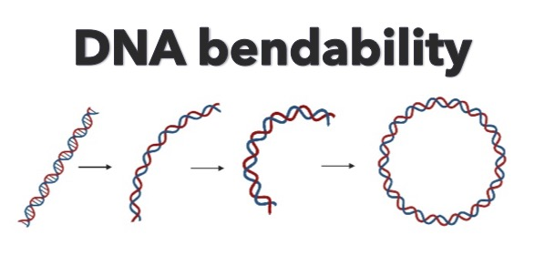

DNAcycP2
DNAcycP2 is an improved version of previously released DNAcycP for DNA cyclizability or bendability prediction trained based on loop-seq data after removing biotin bias using a newly developed data augmentation approach.
Professor of Statistics & Data Science, Adjunct Professor of Molecular BioSciences
Faculty at NSF‑Simons National Institute for Theory & Mathematics in Biology, Northwestern University
Bioinformatics and computational biology; Nucleosome mapping and positioning prediction; Epigenetics; Species number and population size estimation; Mixture models and computing algorithms
DNAcycP2 is an improved version of previously released DNAcycP for DNA cyclizability or bendability prediction trained based on loop-seq data after removing biotin bias using a newly developed data augmentation approach.
BoostMEC is a boosting tree based approach, utilizing LightGBM for the prediction of wild-type CRISPR-Cas9 editing efficiency.

NuPoP is an R package for Nucleosome Positioning Prediction based on DNA sequence. The model is trained based on in vivo chemical map or Mnase map of nucelosomes.
SPECIES is an R package that implements various popular methods in species richness estimation.
RiboDiPA is a bioinformatics pipeline developed for differential pattern analysis of Ribo-seq footprint data.
DegNorm is a bioinformatics pipeline to correct for bias due to the heterogeneous patterns of transcript degradation in RNA-seq data.
DNAcycP2: improved estimation of intrinsic DNA cyclizability through data augmentation
Kendall, B., Jin, C., Li, K., Ruan, F., Wang, X.A., and Wang, J.-P., Nucleic Acids Research ,
2025, 53, gkaf145, download Python package , R package
BNLSDeconv: an efficient cell-type deconvolution method for spatial transcriptomics data
Chen, Y., Ruan, F. and Wang, J.-P., Bioinformatics,
2025,41(1).https://doi.org/10.1093/bioinformatics/btae747
BoostMEC: predicting CRISPR-Cas9 cleavage efficiency through boosting models
Zarate, O.A., Yang, Y., Wang, X. Wang, J.-P. BMC Bioinformatics,
23, 446 (2022). https://doi.org/10.1186/s12859-022-04998-z
Python package download
DNAcycP: a deep learning tool for DNA cyclizability prediction
Li, K., Caroll,M.,Vafabakhsh, R., Wang, X., Wang, J.-P. Nucleic Acids Research, 2022, https://doi.org/10.1093/nar/gkac162
Python package download: GitHub, Run DNA bendabilty/cyclizabilty prediction in real time web server,
RiboDiPA: A novel tool for differential pattern analysis in Ribo-seq data
Li, K., Hope, M., Wang, X., Wang, J.-P. Nucleic Acids Research, 2020,48(21), doi:10.1093/nar/gkaa1049
DegNorm: normalization of generalized transcript degradation improves accuracy in RNA-seq analysis
Xiong, B., Yang, Y., Fineis, F. Wang, J.-P.,
Genome Biology, 2019, 20:75.
DegNorm python package at Github
Genome-wide mapping of the nucleosome landscape by micrococcal nuclease and chemical mapping
Voong,L. N., Xi, L., Wang, J.-P., Wang, X.
. Trends in Genetics, 2017,33(8),495-507 DOI: http://dx.doi.org/10.1016/.tig.2017.05.007.
Insights into Nucleosome Organization in Mouse Embryonic Stem Cells through Chemical Mapping
Voong,L. N., Xi, L., Sebeson, A.C., Xiong, B., Wang, J.-P., Wang, X.
. Cell, 2016, 167(6),1555-1570.e15, DOI: http://dx.doi.org/10.1016/j.cell.2016.10.049.
highlighted in Nature Reviews Molecular Cell Biology
A locally convoluted cluster model for nucleosome positioning signals in chemical map
Xi, L., Brogaard,K., Zhang, Q., Lindsay, B.G., Widom, and Wang, J.-P., Journal of American Statistical Association ,
2014, 109(505) 48-62, DOI:10.1080/01621459.2013.862169
Chemical map of Schizosaccharomyces pombe reveals species-specific features in nucleosome positioning
Moyle-Heyrman, G., Zaichuk, T., Xi, L., Zhang, Q., Uhlenbeck, O.C., Holmgren, R., Widom, J. and Wang, J.-P.,
PNAS 2013,110(50),20158-20163 pdf; Supplementary materials
Office: Room 302, 2006 Sheridan Road, Evanston, IL 60208
Email: jzwang@northwestern.edu
Phone: (847) 467-6896 (Dept: 847-491-3974)